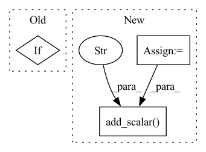

Pattern ID :10231
Before Change
mask = torch.Tensor([[x is not None for x in lb] for lb in label_batch])
labels = [[0 if x is None else x for x in lb] for lb in label_batch]
if scaler is not None:
labels = scaler.transform(labels) // subtract mean, divide by std
labels = torch.Tensor(labels)
After Change
// Log and/or add to tensorboard
if (n_iter // args.batch_size) % args.log_frequency == 0 and (logger is not None or writer is not None):
lr = scheduler.get_lr()[0]
pnorm = compute_pnorm(model)
gnorm = compute_gnorm(model)
loss_avg = loss_sum / iter_count
loss_sum, iter_count = 0, 0
if logger is not None:
logger.debug("Loss = {:.4e}, PNorm = {:.4f}, GNorm = {:.4f}, lr = {:.4f}".format(loss_avg, pnorm, gnorm, lr))
if writer is not None:
writer.add_scalar("train_loss", loss_avg, n_iter)
writer.add_scalar("param_norm", pnorm, n_iter)
writer.add_scalar("gradient_norm", gnorm, n_iter)
writer.add_scalar("learning_rate" , lr, n_iter)
return n_iter
In pattern: SUPERPATTERN
Frequency: 4
Non-data size: 3
Instances Fragment ID: 36013389
Project Name: aamini/chemprop
Commit Name: 64f98d60d13bc4bd7131ea4453b03163503cce0c
Time: 2018-10-02
Author: swansonk.14@gmail.com
File Name: train_utils.py
M Class Name: AnonimousClass
N Class Name: AnonimousClass
M Method Name: train(9)
N Method Name: train(9)
M Parent Class:
N Parent Class:
M File Name: train_utils.py
N File Name: train_utils.py
M Start Line: 24
M End Line: 54
N Start Line: 23
N End Line: 96
Before Change
trainer.train()
// TODO eval
if test_loader is not None and False:
accuracy = 0
if cfg.tensorboard:After Change
evaluator = Evaluator(
model=model, device=device, loader=test_loader, checkpoint_path=None
)
accuracy = evaluator.evaluate()
if writer:
writer.add_scalar("Eval/Accuracy/test" , accuracy, -1)
if cfg.tensorboard:
res_path = hydra.utils.to_absolute_path(f"results/{cfg.dataset.name}/")
params = flatten(OmegaConf.to_container(cfg, resolve=True)) Fragment ID: 36013388
Project Name: dmizr/phuber
Commit Name: 80dbdb78ffe74a8f044fe89aa0ece1153514a0c4
Time: 2020-11-27
Author: david.mizrahi@epfl.ch
File Name: phuber/runner.py
M Class Name: AnonimousClass
N Class Name: AnonimousClass
M Method Name: train(1)
N Method Name: train(1)
M Parent Class:
N Parent Class:
M File Name: phuber/runner.py
N File Name: phuber/runner.py
M Start Line: 71
M End Line: 80
N Start Line: 22
N End Line: 94
Before Change
writer.add_scalar("../record/Accuracy/train_ner_f1", f1_ner_total/self.num_sample_total*self.config.batch_size, epoch)
writer.add_scalar("../record/Accuracy/train_rel_ps", correct_score_total / len(self.train_dataset), epoch)
if (epoch+1) % 1 == 0:
self.evaluate()
if epoch > 16 and f1_ner_total > f1_ner_total_best:
torch.save({After Change
ner_loss_final_train = loss_ner_total/self.num_sample_total
rel_loss_final_train = loss_rel_total/self.num_sample_total
f1_ner_final_train = f1_ner_total/self.num_sample_total*self.config.batch_size
precision_score_final_train = correct_score_total / len(self.train_dataset)
print("train ner loss: {0}, rel loss: {1}, f1 score: {2}, precission score: {3}".format(ner_loss_final_train, rel_loss_final_train,
f1_ner_final_train, precision_score_final_train))
// pbar.set_description("TRAIN LOSS: {}".format(loss_total/self.num_sample_total))
// neptune 记录代码
// neptune.log_metric("train ner loss", loss_ner_total/self.num_sample_total)
// neptune.log_metric("train ner f1 score", f1_ner_total/self.num_sample_total*self.config.batch_size)
// neptune.log_metric("train rel precission score", correct_score_total / len(self.train_dataset))
// tensorboard 记录代码
writer.add_scalar("Loss/train_ner_loss", ner_loss_final_train, epoch)
writer.add_scalar("Accuracy/train_rel_loss", rel_loss_final_train, epoch)
writer.add_scalar("Accuracy/train_ner_f1", f1_ner_final_train, epoch)
writer.add_scalar("Accuracy/train_rel_ ps" , precision_score_final_train, epoch)
if (epoch+1) % 1 == 0:
self.predict_sample()
if (epoch+1) % 1 == 0:
ner_loss_final_eval, rel_loss_final_eval, f1_ner_final_eval, precision_score_final_eval = self.evaluate() Fragment ID: 36013385
Project Name: mangonihao/multiheadjointentityrelationextraction_simple
Commit Name: f3cd70fea333102bb4705e0b92cee42d8a1a6a41
Time: 2021-04-07
Author: 2075419247@qq.com
File Name: mains/trainer.py
M Class Name: Trainer
N Class Name: Trainer
M Method Name: train(1)
N Method Name: train(1)
M Parent Class:
N Parent Class:
M File Name: mains/trainer.py
N File Name: mains/trainer.py
M Start Line: 84
M End Line: 127
N Start Line: 84
N End Line: 138
Before Change
def on_log(self, args, state, control, logs=None, **kwargs):
if state.is_local_process_zero:
if isinstance(logs, dict):
if self.mode == "train":
logs["step"] = state.global_step
logs["train_loss"] = logs.pop("loss", None) // Trainer internal uses `loss`, instead of `train_loss`
logs = self.out_dict2str(logs)After Change
// Trainer internal uses `loss`, instead of `train_loss`
logs["train_loss"] = loss = logs.pop("loss", None)
assert loss is not None
lr = logs["learning_rate"]
self.writer.add_scalar("Train/loss", loss, step)
self.writer.add_scalar("Train/learning_rate" , lr, step)
logs = self.out_dict2str(logs)
else:
logs = log_dict(logs)
self.logger.info(logs) Fragment ID: 36013384
Project Name: stefanheng/symbolic-music-generation
Commit Name: c3c9ff076680751481754b5d0e5f5c5599ce1136
Time: 2022-02-26
Author: 43276957+SpongeBobBang@users.noreply.github.com
File Name: musicnlp/util/train.py
M Class Name: ColoredPrinterCallback
N Class Name: ColoredPrinterCallback
M Method Name: on_log(5)
N Method Name: on_log(5)
M Parent Class: TrainerCallback
N Parent Class: TrainerCallback
M File Name: musicnlp/util/train.py
N File Name: musicnlp/util/train.py
M Start Line: 81
M End Line: 87
N Start Line: 160
N End Line: 171